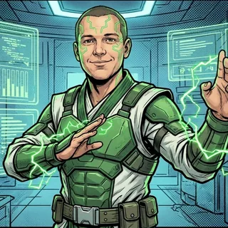

📡 Küldetés-eligazítás

📡 Kanrak: Maxi pályája és a teleport-kapu: ha a pálya átmetszi a kaput, két helyen nyílik rés a peremen. Ha csak érinti, egyetlen pont marad — ez a csapásmérési pont, ahol Tér-eb a kapu szélére ugorhat. Ma két módszert tanulunk arra, hogy eldöntsük, melyik eset áll fenn.
Kölcsönös helyzet — két módszer
📘 Egyenes és kör kölcsönös helyzete
1. módszer — behelyettesítés. Az egyenes egyenletéből kifejezzük az egyik ismeretlent, és behelyettesítjük a kör egyenletébe. Másodfokú egyenletet kapunk, és a diszkriminánsa dönt:
- \(D\gt0\): két közös pont — az egyenes szelő;
- \(D=0\): egy közös pont — az egyenes érintő;
- \(D\lt0\): nincs közös pont — az egyenes elkerüli a kört.
Itt a \(D\) a másodfokú egyenlet diszkriminánsa, nem a háromszög területénél használt determináns.
2. módszer — távolság. Kiszámítjuk a középpont \(d\) távolságát az egyenestől: \(d\lt r\) szelő, \(d=r\) érintő, \(d\gt r\) nincs közös pont.
Az ábra kezdőállapotát látod. Az interaktív vezérléshez JavaScript szükséges.
Az egyenes 3x + 4y = 25. A középpont távolsága 5, a sugár 5: az egyenes érintő. Egy közös pont: (3; 4).
A kör rögzített: \(x^2+y^2=25\), középpontja \(C(0;0)\), sugara \(r=5\). Változtasd \(c\) értékét: az egyenes így önmagával párhuzamosan tolódik el. Figyeld a közös pontok számát! \(d\lt r\): szelő; \(d=r\): érintő; \(d\gt r\): az egyenes elkerüli a kört. \(T\) a középpontból bocsátott merőleges talppontja; érintésnél ez a közös pont.
Az 1. módszer ugyanaz a recept, mint a lineáris és másodfokú egyenletből álló rendszernél, és a metszéspontokat is megadja. A 2. módszer gyorsabb, ha csak a helyzet a kérdés — de csak körnél működik.
Példa. \(x^2+y^2=25\) és \(y=x+1\). Behelyettesítve \(x^2+(x+1)^2=25\), rendezve \(2x^2+2x-24=0\), azaz \(x^2+x-12=0\). \(D=1+48=49\gt0\), tehát szelő. Távolsággal: az egyenes \(x-y+1=0\), \(d=\frac{|0-0+1|}{\sqrt2}\approx0{,}71\lt5\) ✔.
A „recept” a többi görbére. Ugyanez a behelyettesítéses módszer működik majd az ellipszisnél, a hiperbolánál és a parabolánál is.
🎯 Gyors kérdés
Egy egyenes és egy kör egyenletéből a behelyettesítés után olyan másodfokú egyenletet kaptunk, amelynek diszkriminánsa \(D=0\). Mit jelent ez?
🎯 Gyors kérdés
Egy kör sugara \(r=5\), a középpontja az \(e\) egyenestől \(d=3\) távolságra van. Milyen az egyenes helyzete?
Metszéspontok és húrhossz
Szelő esetén a két metszéspont közötti szakasz a húr. Hossza a két pont távolsága, vagy — ha csak a hossz kell — a középpont távolságából, Pitagorasz-tétellel:
\[h=2\sqrt{r^2-d^2}.\]Az előző példában a metszéspontok \(x=3\) és \(x=-4\) mellett \((3;4)\) és \((-4;-3)\), a húr \(\sqrt{7^2+7^2}=7\sqrt2\approx9{,}90\). Képlettel: \(2\sqrt{25-\frac12}=2\sqrt{\frac{49}{2}}=7\sqrt2\) ✔.
✏️ Kristály-kamra szimuláció — Maxi átvág a körzeten
Tér-eb teleport-körzete a \((4;3)\) középpontú, \(5\) km sugarú körlap. Maxi drónja az \(x+y-2=0\) egyenes mentén repül (a koordináta-rendszer egysége \(1\) km).
- Áthalad-e a drón a körzeten?
- Melyik két pontban metszi az útvonala a körzet határát?
- Milyen hosszú az az útszakasz, amelyen Tér-eb körzetében repül? (Két tizedesre kerekíts!)
Megoldás
a) \(d=\frac{|4+3-2|}{\sqrt{1+1}}=\frac5{\sqrt2}\approx3{,}54\lt5\), tehát igen, átvág a körzeten.
b) \(y=2-x\)-et behelyettesítjük: \((x-4)^2+(-1-x)^2=25\), \(2x^2-6x-8=0\), azaz \(x^2-3x-4=0\), ahonnan \(x=4\) vagy \(x=-1\). A pontok \(M_1(4;-2)\) és \(M_2(-1;3)\).
c) \(|M_1M_2|=\sqrt{5^2+5^2}=5\sqrt2\approx7{,}07\) km. Képlettel: \(2\sqrt{25-\frac{25}{2}}=5\sqrt2\) ✔.
A körzet, Maxi útvonala és a körzeten belüli szakasz (piros).
a) igen, \(d\approx3{,}54\lt5\) · b) \((4;-2)\) és \((-1;3)\) · c) \(5\sqrt2\approx7{,}07\) km
Az érintő a kör egy pontjában
📘 A kör érintője a kör egy pontjában
A \((x-p)^2+(y-q)^2=r^2\) kör \(T(x_1;y_1)\) pontjában húzott érintő egyenlete
\[(x_1-p)(x-p)+(y_1-q)(y-q)=r^2 .\]Origó középpontú körnél: \(x_1x+y_1y=r^2\). A képlet csak akkor ad érintőt, ha a \(T\) pont valóban a körön van — ezt mindig ellenőrizd először.
Az érintő merőleges az érintési ponthoz húzott sugárra.
✏️ Érintő a kör adott pontjában
Írd fel az \((x-1)^2+(y+2)^2=25\) kör \(T(4;2)\) pontjában húzott érintőjének egyenletét!
Megoldás
Ellenőrzés: \((4-1)^2+(2+2)^2=9+16=25\) ✔, a \(T\) a körön van.
Képlet: \((4-1)(x-1)+(2+2)(y+2)=25\), azaz \(3x-3+4y+8=25\), rendezve \(3x+4y-20=0\).
Ellenőrzés merőlegességgel: a \(CT\) sugár iránytényezője \(\frac{2-(-2)}{4-1}=\frac43\), az érintőé \(-\frac34\), szorzatuk \(-1\) ✔.
Az érintő a \(T\) pontban derékszöget zár be a \(CT\) sugárral.
\(3x+4y-20=0\)
⚠️ Maxi trükkje
Maxi a \(P(4;3)\) pontot helyettesítette be ugyanennek a körnek az érintőképletébe, és a kapott \(3(x-1)+5(y+2)=25\) egyenest érintőnek hitte. Tér-eb a kapu belsejébe zuhant.
A \(P(4;3)\) nincs a körön: \((4-1)^2+(3+2)^2=34\ne25\). Az érintőképlet csak a kör saját pontjára érvényes; más pontra beírva egy teljesen más egyenest ad.
A másik gyakori hiba a behelyettesítésnél: \((kx+n)^2\) nem \(k^2x^2+n^2\), hanem \(k^2x^2+2knx+n^2\) — a kétszeres szorzat nem maradhat el.
💡 Hol találkozol vele?
A kalapácsvető körpályán forgatja a kalapácsot. Abban a pillanatban, amikor elengedi, a kalapács sebessége az érintő irányába mutat; a további röppályáját a gravitáció és a légellenállás is befolyásolja — ezért a dobás iránya attól függ, a kör melyik pontjában engedi el.
Az érintési feltétel
Eddig a kör egy adott pontjában húztunk érintőt. Mi van, ha az érintő iránya adott — például párhuzamos egy egyenessel —, és azt keressük, melyik ilyen egyenes érinti a kört? Az \(y=kx+n\) egyenes pontosan akkor érintő, ha a középpont távolsága tőle \(r\). A \(kx-y+n=0\) alakra felírva:
\[\frac{|kp-q+n|}{\sqrt{k^2+1}}=r .\]📘 A kör érintési feltétele
Az \(y=kx+n\) egyenes pontosan akkor érinti a \((x-p)^2+(y-q)^2=r^2\) kört, ha
\[r^2\,(1+k^2)=(kp-q+n)^2 .\]Origó középpontú körnél: \(r^2(1+k^2)=n^2\). Ugyanez jön ki a behelyettesítéses módszer \(D=0\) feltételéből is.
A függőleges érintőket (\(x=p+r\) és \(x=p-r\)) a feltétel nem mutatja, mert nem írhatók \(y=kx+n\) alakban.
🔴 Kristály-protokoll: az érintési feltétellel dolgozó feladatok a gyűjtemény nehéz sávjában vannak.
Példa. Melyik \(y=2x+n\) egyenes érinti az \(x^2+y^2=5\) kört? A feltétel: \(5\cdot(1+4)=n^2\), azaz \(n^2=25\), \(n=\pm5\). Két ilyen érintő van: \(y=2x+5\) és \(y=2x-5\) — a kör két oldalán. Ellenőrzés: \(d=\frac{|5|}{\sqrt5}=\sqrt5=r\) ✔.
Gyakorolj! Válaszd ki a bevetésed:
📡 Kanrak: A kör a legszabályosabb kapu: minden irányban ugyanakkora. Maxi torzító mezői viszont megnyúltak — és nem egy, hanem két magjuk van. A kör egyenlete itt már nem segít.